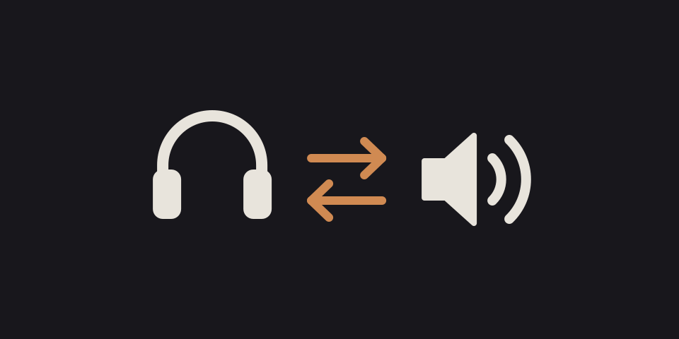

AudioSwitcher
Switch your Windows audio output with one hotkey
Overview
AudioSwitcher runs quietly in the background and switches your sound between speakers, a headset, an external DAC or any other output with a single global hotkey. No more opening the sound settings in the middle of a game or a call.
Features
When you switch, a small notification fades in over the clock in the bottom-right corner of the taskbar, then fades away. It tells you which device is active without covering anything you're working on.
Windows often mixes up audio devices that share a product name. AudioSwitcher identifies each one by its unique ID from the Windows Core Audio API (via pycaw), so it always switches to the right device.
AudioSwitcher can add itself to the Windows startup folder. It works whether you run the Python script or the single .exe, so it's ready in the background every time you sign in.
What's included
AudioSwitcher.exe— The entire app, including device control. Nothing else to install.
About the Windows SmartScreen warning
AudioSwitcher isn't code-signed, so Windows may show a SmartScreen warning the first time you run it. Download and run it at your own risk. The full source code is on GitHub if you'd like to check it first.